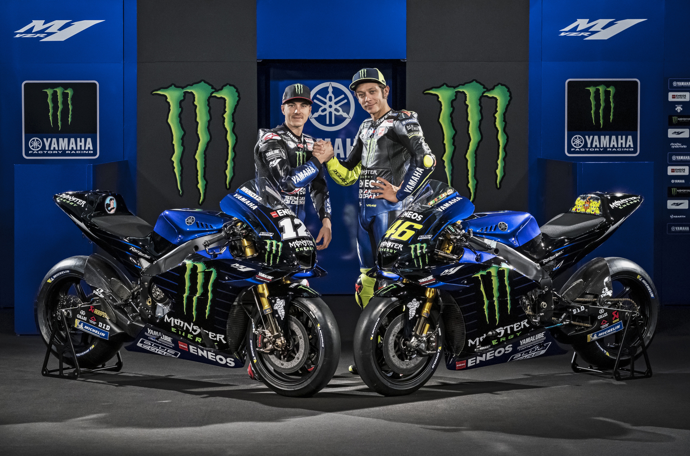
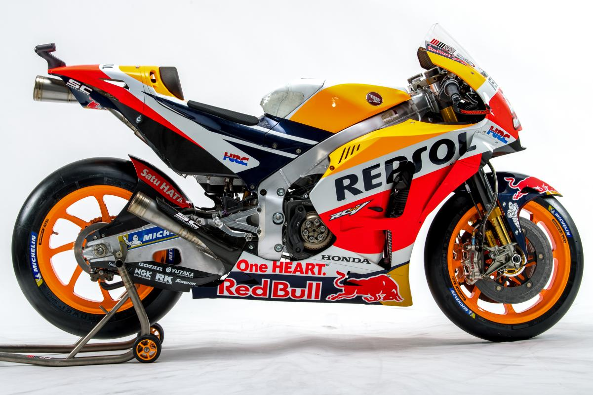
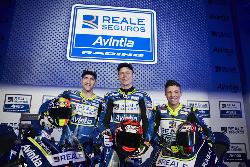

MotoGP is a motorbike racing series that has been going on since 1949. MotoGP races usaully take place around motorsport designed circuits.Motogp is usually has 19 grand prixs each season with 11 teams each with 2 drivers competing to be the best. Here we going to take a quick look at 3 of those teams. The teams we are looking at are Monster Energy Yamaha MotoGP, Respol Honda Team and Avinta Racing.
The most suucesful drivers in motogp history are Giacamo Agostini with 15 world Championsip wins, followed by Angel Neito with 13 world championship wins with Mike Haliwood, Valentino Rossi and Carlo Ubbiali all a joint 3rd with 9 world championship wins.
Honda holds the record for the most Grand Prix victories on the premier class, having won 309 times. Yamaha is second with 236 wins, and MV Agusta is third with 139 wins.
Monster Energy Yamaha MotoGP-The team was founded in 1999 but has been in. The team based in Lesmo, Italy has 7 MotoGP titles 4 with Valentino Rossi and 3 with Jorge Lorenzo.
Respol Honda Team-The team is based in Aalst Belguim and its riders are Stefan Bradi, Alex Marques and Marc Marques who has won 6 rider titles with the team, the first of those in 2013. The team has won 11 riders titles since 1999. Those titles were with Alex Criville Valentino Rossi Niky Hayden Casey Stoner and the already mentioned Marc Marques.
Avinta Racing- The team is based in Madrid Spain and is actually called Esponsorama Racing, its riders are Johann Zarco and Tito Rabat.
